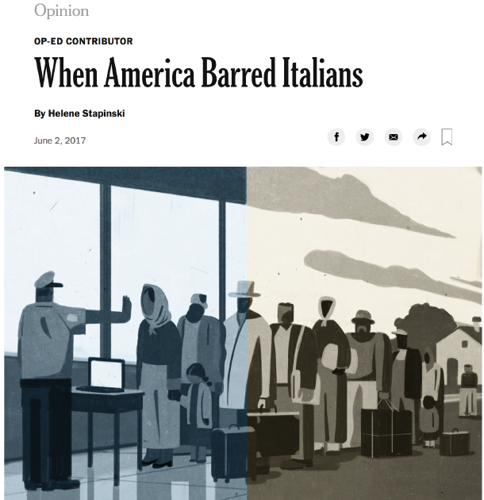
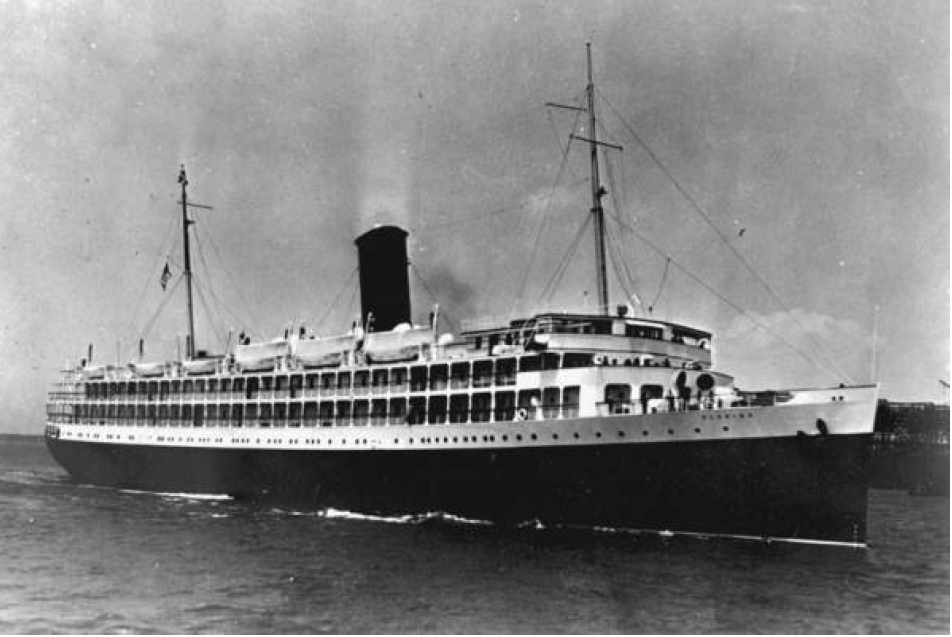
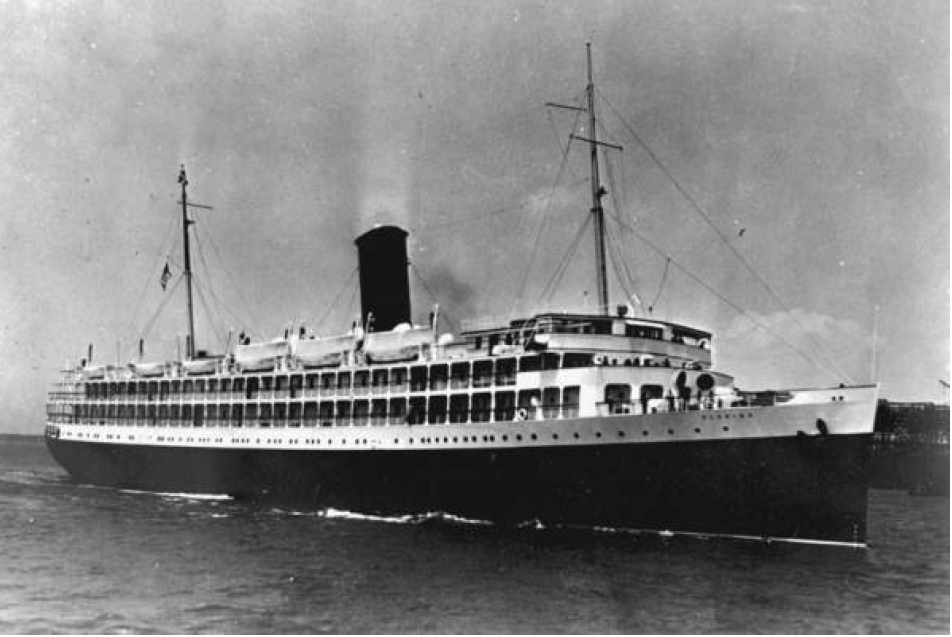

World Wars and the Great Depression had adverse effects on Globalization. Major receiving countries introduced restrictions to entry. After several legislative attempts to make migration policy more restrictive, literacy test was passed in 1917. In 1921, country-specific immigration quotas were imposed. Quotas favored countries from northwestern Europe and restricted southern and eastern European immigration.Restrictions followed some country-specific restrictions happening earlier, such as the Chinese Exclusion Act of 1882 and "gentleman's agreement" with Japan in 1907 to reduce Japanese immigration. Great Depression (1929-1939) decreased the attractiveness of the US and World Wars also disrupted transportation routes. Emigration restrictions also reduced opportunities for international migration (most notably, by the Soviet Union). As a result, Immigration rates fell sharply throughout the developed world. In the US, proportion of foreign-born reached its lowest level in 1970 (lower than 5%).
 
